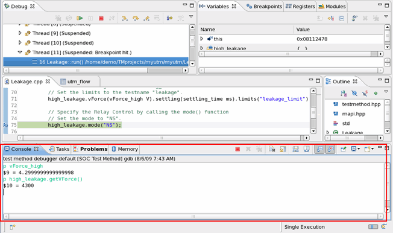

How to debug a universal test method
This topic shows how to debug a universal test method in SmarTest.
About this task
The debugging of universal test methods is done in the Debug perspective of SmarTest.
Before you begin
Make sure you are using SmarTest 6.3 or later, and the universal test method has been successfully built. A testflow using the test method must be ready for execution.
Procedure
-
In the Console view, you can change and query the variable value and
test method execution status with the C/C++ functions and test method APIs. For example,
p variable1 prints the value of variable1 and
p testmethod_api executes the
testmethod_api
and prints the execution returned value. To get more information of the commands that can be used in Console view, type in help.If the test method debugger console is hidden by another console, click the screen button
 and select the test method debugger from the shortcut menu.
and select the test method debugger from the shortcut menu.
Results
Your test method is bug free and ready to use.
What to do next
Install the test method library for the use of other users or other devices.
Functional changes
- Introduced before SmarTest 6.3.2
- SmarTest 6.5.2: New button Run > Terminate TestMethod Execution in the main menu
- SmarTest 6.5.2: New button Start Test Method Debug and Stop Test Method Debug.